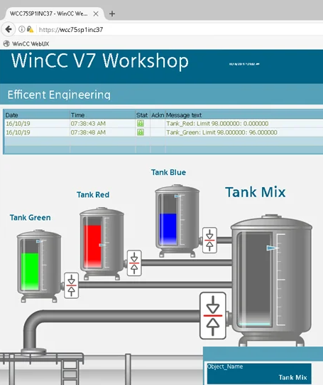
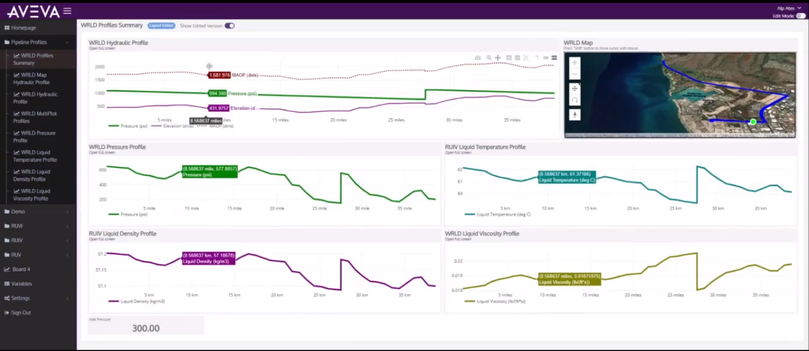
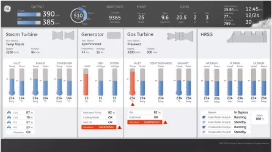
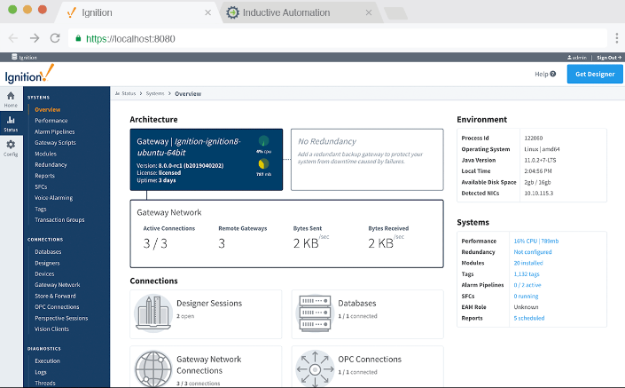
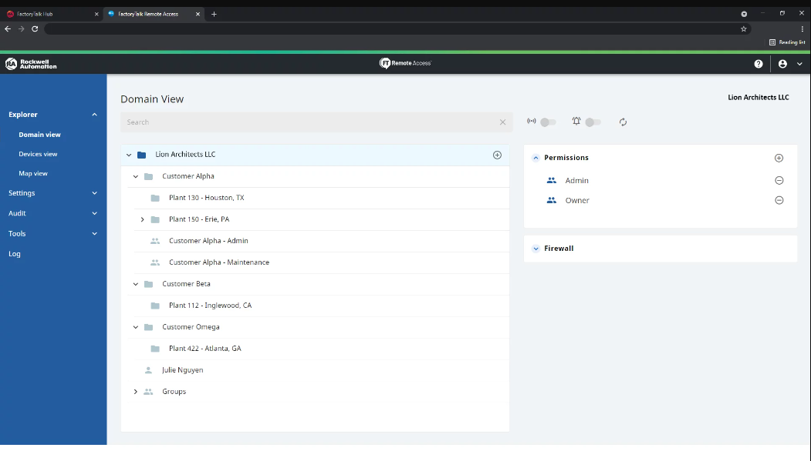

Для обеспечения автоматизации на технологических предприятиях устанавливают различные системы мониторинга и управления производственными процессами. Одними из таких систем являются SCADA-системы и IIoT-платформы.
IIoT-платформ и система SCADA - это две различные, но взаимодополняющие технологии, которые играют ключевую роль в современных промышленных операциях. SCADA, в первую очередь, фокусируется на мониторинге и контроле промышленных процессов посредством сбора и визуализации данных в режиме реального времени. Напротив, IIoT-платформа расширяет эту функциональность, обеспечивая более широкую и разнообразную инфраструктуру подключения. Это облегчает бесшовную интеграцию устройств, датчиков и систем как внутри объекта, так и между несколькими местоположениями. Это расширенное подключение в сочетании с расширенными возможностями анализа данных и машинного обучения позволяет отраслям не только отслеживать, но и оптимизировать процессы, прогнозировать потребности в обслуживании и стимулировать принятие обоснованных решений. В то время как SCADA формирует ядро управления процессами, IIoT-платформа действует как эволюционный слой, который преобразует данные в действенные идеи, предлагая комплексное решение для повышения эффективности, производительности и общего операционного совершенства.
Для сравнения SCADA-системы и IIoT-платформы можно рассмотреть несколько ключевых характеристик этих систем:
SCADA-системы...
IIoT-платформы...
Определение и цель:
предназначены для мониторинга и контроля промышленных процессов и оборудования. Обычно они включают в себя программные и аппаратные компоненты, которые собирают данные с датчиков и устройств, отображают данные операторам в режиме реального времени и позволяют им удаленно управлять процессами.
более широки по объему и сосредоточены на подключении промышленных устройств, машин и систем к Интернету или локальным сетям. Их основная цель - обеспечить сбор, интеграцию и анализ данных из различных источников в рамках всей промышленной экосистемы.
Сбор данных:
обычно ограничены сбором данных с устройств, напрямую подключенных к сети SCADA. В основном они собирают данные с датчиков, исполнительных механизмов и контроллеров в локальной среде.
предназначены для сбора данных с широкого спектра устройств и датчиков, независимо от их местоположения или протокола связи. Эти платформы могут подключаться к устройствам как локально, так и удаленно, что позволяет централизованно интегрировать и анализировать данные из разных объектов или географических местоположений.
Возможность подключения:
как правило, замкнутого цикла, проприетарные системы, которые полагаются на специализированные протоколы связи. Они предназначены для локальной связи в пределах промышленного объекта или установки.
по определению, созданы для облегчения открытого подключения и взаимодействия. Они могут интегрироваться с различными протоколами связи, облегчая подключение и связь с различными устройствами и системами.
Анализ и интерпретация данных:
обеспечивают визуализацию данных в режиме реального времени и базовый анализ тенденций, кроме этого они могут иметь ограниченные возможности для расширенного анализа данных и прогностической информации.
часто оснащаются мощными инструментами аналитики данных, алгоритмами машинного обучения и возможностями ИИ. Они могут обрабатывать большие объемы данных, обнаруживать шаблоны и предоставлять ценную информацию для прогнозного обслуживания, оптимизации процессов и общих операционных улучшений.
Масштабируемость и гибкость:
могут масштабироваться в пределах одного объекта или установки, но расширение их для подключения устройств от разных поставщиков или мест может быть очень сложной задачей.
предназначены для простого масштабирования, размещения растущего числа устройств, датчиков и источников данных. Они предлагают большую гибкость в интеграции новых технологий и расширении на нескольких площадках или объектах.
Таким образом, основное отличие IIoT-платформ от SCADA-систем состоит в том, что SCADA-системы предназначены для мониторинга, управления и контроля промышленного процесса в реальном времени, тогда как на IIoT-платформах, помимо перечисленных выше, реализованы встроенные инструменты для облачного хранения данных, аналитики больших данных и интеграции с различными устройствами IoT напрямую. Многие современные промышленные приложения теперь стремятся объединить сильные стороны платформ SCADA и IIoT для создания более комплексного и мощного решения для промышленной автоматизации и оптимизации.
Существует множество различных IIoT-платформ, каждая из которых имеет свои уникальные особенности и применения в различных отраслях промышленности. Компании выбирают IIoT-платформу в зависимости от своих требований, характера производства и специфики процессов, которые им необходимо контролировать и управлять.
Вот некоторые из наиболее известных и широко используемых SCADA-систем:
Simatic WinCC: Одна из самых популярных SCADA-систем, разработана компанией Siemens. Имеет широкие возможности по визуализации данных, сбору и обработке информации. 
AVEVA Enterprise SCADA: SCADA-система, разработанная компанией AVEVA, которая является одной из самых надежных в мире систем управления трубопроводами и служит цифровой трансформационной платформой для операторов среднего уровня, чтобы использовать расширенную аналитику и облачные возможности, а также предоставляет безопасные операции с трубопроводами, помогает в обнаружении утечек и предлагает приложение поддержки принятия корпоративных решений. 
iFIX HMI: Еще одна из популярных SCADA-систем, предлагаемая компанией GE Vernona. Обладает гибкими возможностями конфигурирования и визуализации данных. 
Inductive Automation Ignition: SCADA-платформа, предлагаемая компанией Inductive Automation, обладает открытой архитектурой, удобным пользовательским интерфейсом и расширенными возможностями интеграции. Хотя Ignition изначально разрабатывалась как SCADA-система, ее архитектура и функциональность позволяют использовать ее для создания IIoT-решений. 
Rockwell Automation FactoryTalk View SE: SCADA-система, разработанная компанией Rockwell Automation, предлагает инструменты для визуализации данных, управления и контроля промышленными процессами. Она может интегрироваться с IIoT-платформами или сервисами для расширения своей функциональности и включения возможностей IIoT. Например, её можно интегрировать с облачными сервисами для хранения данных, аналитики и управления устройствами, что позволяет использовать её как часть IIoT-архитектуры в больших и сложных системах управления. 
Вот несколько примеров IIoT-платформ, которые предоставляют различные возможности для сбора, анализа и использования данных в промышленной среде:
Predix Platform by GE Digital: Это платформа, разработанная компанией General Electric для создания и внедрения IIoT-решений в различных отраслях, таких как энергетика, транспорт, здравоохранение и производство.
Siemens MindSphere: Это облачная платформа для разработки и эксплуатации IIoT-приложений, предлагаемая Siemens. Она позволяет собирать и анализировать данные, мониторить состояние оборудования и оптимизировать производственные процессы.
IBM Watson IoT Platform: IBM предлагает платформу, основанную на искусственном интеллекте и аналитике данных, для сбора, анализа и использования данных из различных источников в промышленности.
Microsoft Azure IoT Suite: Это облачная платформа от Microsoft, предоставляющая инструменты для создания и внедрения разнообразных IIoT-решений, включая сбор данных, аналитику и масштабирование.
PTC ThingWorx: Платформа ThingWorx от PTC предлагает инструменты для разработки IIoT-приложений и аналитики данных, а также возможности для интеграции с другими системами и устройствами.
Amazon Web Services (AWS) IoT: AWS предоставляет набор услуг и инструментов для создания, развертывания и управления IIoT-приложениями на основе облачных технологий.
Таким образом, можно сказать, что IIoT-платформа является важным инструментом для обеспечения эффективного управления и контроля в промышленности, повышая производительность, безопасность и надежность производственных объектов. Использование IIoT-платформ позволяет предприятиям повысить эффективность, оптимизировать производственные процессы, предотвращать сбои и улучшать качество продукции путем анализа данных и управления промышленными устройствами и системами в реальном времени.
Что такое Faceplate
Faceplate - это IIoT-платформа, которая имеет комплексную системную архитектуру для промышленного или IoT-приложения, включающую пользовательские интерфейсы, инструменты разработки, сервисы обработки данных, облачную интеграцию и серверные сервисы. Платформа предназначена для мониторинга, управления и администрирования промышленных процессов и устройств IoT.
Программный комплекс FACEPLATE состоит из 3 программных компонентов:
Среда разработки FACEPLATE Studio.
Это набор инструментов, при помощи которых проектируется и настраивается среда визуализации и управления технологическим процессом. Здесь можно создать и выполнить конфигурацию шаблонов, прототипов, архивов, отчетов, систем оповещения и других функций, а также разработать алгоритм управления.
Среда исполнения FACEPLATE Runtime.
Это набор программных продуктов, который необходим для автоматизации системы управления технологическим процессом в режиме реального времени на операторской станции.
База данных Ecomet.
Это СУБД для real-time приложений, которая предлагает встроенную модель управления правами пользователей и поддержку защищенных подключений через Secure WebSocket, что позволяет обеспечить безопасную работу с данными из браузера с использованием JavaScript.
Ниже представлена диаграмма, демонстрирующая взаимодействие между компонентами платформы:
Архитектура включает несколько ключевых блоков и их взаимосвязей.
Компоненты:
Пользовательский интерфейс (Faceplate UI)
Пользовательские интерфейсы обеспечивают взаимодействие пользователей с системой. На диаграмме показаны два блока Faceplate UI, что может указывать на наличие нескольких интерфейсов или экземпляров.
Облачные сервисы (Faceplate Cloud)
Облачная платформа для хранения и обработки данных, обеспечивающая доступность и масштабируемость системы.
Статистический сервис (Statistics Service)
Этот сервис отвечает за формирование статистики по событиям, срабатываниям и т.д. на основе данных, собранных системой.
Сервер изображений (Image Server)
Сервер для хранения и обработки изображений, возможно, используемых в визуализации или анализе данных.
Прокси-серверы и соединения (Relay Proxy, WebService)
Обеспечивают безопасное и эффективное соединение между различными компонентами системы.
PLC и EDGE устройства (PLC Connection, EDGE)
PLC (программируемый логический контроллер) и EDGE устройства обеспечивают управление и мониторинг промышленных процессов.
IoT-соединение и супервизор (IOT Connection, IOT Connection Supervisor)
Ответственные за управление и мониторинг IoT-устройств, а также за установление соединений с облачными сервисами (например, Amazon, Google, Azure).
Архивы и агрегатор (TimeSeries, Aggregator)
Сервисы для сбора и обработки архивных данных, а также их агрегации для дальнейшего анализа.
Сервисы оповещений и скриптов (Alarm Service, Script Supervisor)
Обеспечивают обработку и отправку оповещений, а также выполнение скриптов для автоматизации различных процессов.
Логические и видео супервизоры (Logic Supervisor, Video Supervisor)
Логический супервизор отвечает за управление логическими группами и процессами, а видео супервизор - за обработку видеопотоков.
Подключение к базам данных в реальном времени (RT DB)
База данных для хранения данных в реальном времени, используемая для быстрого доступа и обработки.
Супервизор архивов (TimeSeries Supervisor)
Управляет сбором и хранением данных архивов.
Базы данных архивов и оповещений (TS DB, Alarm DB)
Хранят данные архивов и информацию о сообщениях соответственно.
Репликация данных (Replica Supervisor, Replica TS, Replica Alarm, Replica RT)
Управляет копиями данных для обеспечения отказоустойчивости и высокой доступности. Реплики баз данных архивов, оповещений и данных в реальном времени.
{kind=link}
{kind=link}
{kind=link}
{kind=link}
{kind=link}
{kind=link}